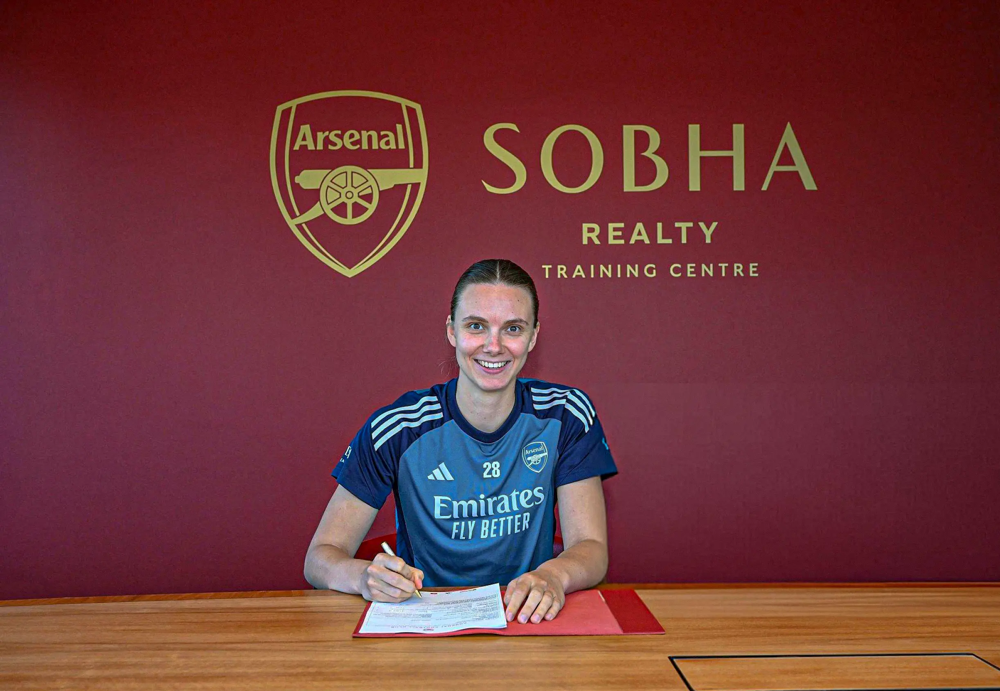

#28 • Goalkeeper • Arsenal Women
Date of Birth: 17th September 2000 (age 25)
Place of Birth: Pinneberg, Germany
Nationality: German
International Team: Germany
Joined Arsenal: 2025
Past Clubs: 2016-2023 Werder Bremen 2023-2025 VfL Wolfsburg
Total Appearances: 8
Total Clean Sheets: X
Appearances This Season: 0
Clean Sheets This Season: 0
Caps: 12
Clean Sheets: X
Major Tournaments: LIST